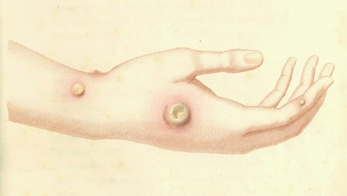
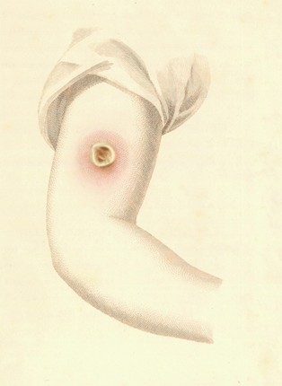
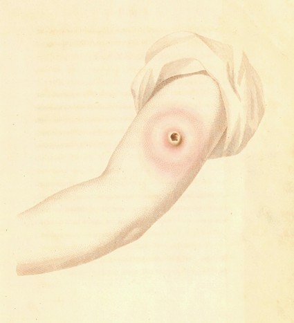
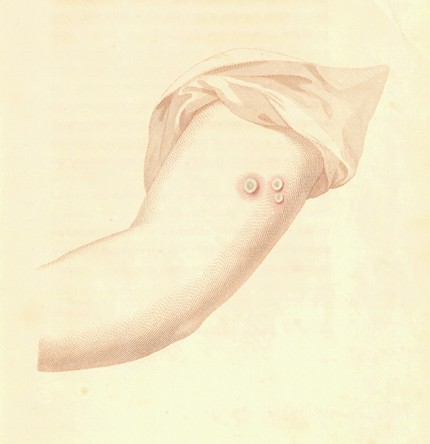

真と誤を示すことができるものとして感覚以上に確実な試験があるだろうか？ ルクレティウス
親しいわが友へ
科学研究の現代において、牛痘のように特別な性質をもつ病気が最近にこの州および近くの州に出現したのに、長期にわたって特別に注目されていないのは驚くべきことである。この問題について、我々と同じ専門の人たちやその他の人たちが極めて無知であり決定的でないことを見出し、事実は全く不可思議なものであり役に立つことを感じたので、私はこの地方の状態が許す範囲でこの変わった病気について詳しい研究を行った。
ここに続くページがその結果であり、最も愛情のこもった挨拶をもって貴方に献呈する。
貴方の誠実な友より、
エドワード・ジェンナー
バークレー、グルスターシャー
６月21日、1798
エドワード・ジェンナー
バークレー、グルスターシャー
６月21日、1798
元来、ヒトが自然によって置かれた状態から逸脱することは、病気の原因となっているようである。見事さへの愛、贅沢への楽しみ、慰みを好むことから、元来は友人でない多数の動物とヒトは仲が良くなった。
オオカミは獰猛さを失って婦人の膝を枕にしている〔1〕。我々の島の小さなトラだったネコの本来の棲みかは森であったが、同じように飼い慣らされて可愛がられている。雌牛、ブタ、ヒツジ、ウマは目的は違うが人間に飼われ、支配下にいる。
家畜としての状態から、しばしば問題として取り上げられているウマの病気がある。獣医たちはこれを「
乳業が盛んなこの地方では多数の雌牛が飼われていて、乳搾りの業務は見境なく男女の召使によってなされている。男の召使のあるものは踵炎に罹ったウマの蹄の手当をするように命じられ、清潔を充分に考えないで、不注意にも感染性物質の粒を指につけたままで雌牛の乳搾りを行っている。このようにすると病気が雌牛に伝染し、雌牛から乳搾り女に移り、病気は農園内に広がり、最後に雌牛および家畜が不愉快な結果になる。この病気は牛痘の名前を得ている。これは雌牛の乳頭に不規則な膿疱として起きる。最初に出現したときに普通はうす青く、またはむしろ暗青色に近く、丹毒に似た炎症で囲まれている。
これらの膿疱は遅くならないうちに治療しないと、しばしば侵食性潰瘍になり、極めて面倒なことになる〔2〕。
雌牛たちは加減が悪くなり、ミルクの分泌が少なくなる。乳搾りに雇われた使用人たちの手に炎症が点々と出現し、急速に化膿し、最初は火傷でできた発泡のように見える。普通は指の関節および指の先端に現れる。しかし、どの部分に出現するとしてしても、状況が許すときには表面の化膿は円形になり、縁は中心部より高くなり、色はかすかに青色を帯びる。融合が起き、腫脹はそれぞれの腋の下に現れる。全身症状が悪化し――脈は速くなる。そして悪寒に続いて発熱が起き、全身がだるくなり、腰と四肢が痛み、嘔吐が続く。頭が痛く、患者にしばしば意識混濁が起きる。これらの症状は種々の強さがあり、ふつう１日から３〜４日続き、手に潰瘍状の傷が残り、この部分は過敏なことから非常に辛く、ふつう治るのが遅く、ここから飛び出たかのような侵食性潰瘍となることがある。唇、鼻の穴、瞼、や身体のその他の部分に爛れができる。これらは明らかに患者の感染した指で、不必要にこすったり掻いたりしたことによるものである。私が診たどの例でも熱が下がった後では、一例を除いて皮膚の発疹は見られなかった。この例では腕に非常に少ない発疹が見られ、これらは非常に小さく鮮紅色であって、その前の症状と関係があるかどうかを決定することが出来なかった。
このように、この病気はウマから雌牛の乳首に、次に雌牛から人間に進む。
種々の病的物質は体内に吸収されると、あるていど似た効果を示す。しかし牛痘の病毒（＊virus：現在のウイルスを意味するのではない）の非常に特殊な点はこのように牛痘に罹った人々は後に人痘の感染にたいして安全なことである。人痘の毒気（＊effluvia = miasma = 瘴気）にさらされても、病的物質を皮膚に差し込んでも、この病症を発現しない。
このように特別な事実を支持するものとして、読者に多数の例を示すことにしよう〔3〕。
〔1〕故ジョン・ハンター氏はイヌがオオカミの退化した状態であることを実験によって示した。
〔2〕この地方で病気にかかった牝牛の世話をしている人たちは、硫酸亜鉛、硫酸銅などを使って、この症状の進行を早く止めることができる。
〔3〕膿疱性の爛れがしばしば自発的に（＊病毒とは無関係に）雌牛の乳首に出現し、その結果として稀ではあるが乳搾りに雇われている使用人の手に爛れの起きることがあり、時には吸収することによって軽い病気になることすらあるのに気づかねばならない。これらの膿疱は真の牛痘感染によるものよりずっと軽い。牛痘の膿疱によく見られる青っぽい色はいつでも存在しない。丹毒を伴うことはなく、他の例のように侵食性の傾向はなく、雌牛は明らかな病状を示すことなく、かさぶたになって急速に終了する。この病状は１年のうち種々な季節に起きるが、もっとも普通には雌牛が冬の餌から草に移行する春に多い。また子牛に乳を与えているときに多い。しかし、この病気は私が取り扱っているものと、どの点でも似ていると考えることはできない。この病気は人体の状態（＊免疫）に何らかの特別な影響を与えることがないからである。ここで特に注意しなければならないのは、人痘感染からの安全性についてまぎらわしいことがあるので、充分な区別が必要なことである。
〔2〕この地方で病気にかかった牝牛の世話をしている人たちは、硫酸亜鉛、硫酸銅などを使って、この症状の進行を早く止めることができる。
〔3〕膿疱性の爛れがしばしば自発的に（＊病毒とは無関係に）雌牛の乳首に出現し、その結果として稀ではあるが乳搾りに雇われている使用人の手に爛れの起きることがあり、時には吸収することによって軽い病気になることすらあるのに気づかねばならない。これらの膿疱は真の牛痘感染によるものよりずっと軽い。牛痘の膿疱によく見られる青っぽい色はいつでも存在しない。丹毒を伴うことはなく、他の例のように侵食性の傾向はなく、雌牛は明らかな病状を示すことなく、かさぶたになって急速に終了する。この病状は１年のうち種々な季節に起きるが、もっとも普通には雌牛が冬の餌から草に移行する春に多い。また子牛に乳を与えているときに多い。しかし、この病気は私が取り扱っているものと、どの点でも似ていると考えることはできない。この病気は人体の状態（＊免疫）に何らかの特別な影響を与えることがないからである。ここで特に注意しなければならないのは、人痘感染からの安全性についてまぎらわしいことがあるので、充分な区別が必要なことである。
ジョセフ・メレットは今はバークレー伯爵の副園丁であるが、1770年には近くの農園の使用人であり、しばしば主人の雌牛の乳搾りを手伝っていた。農園に属する数匹のウマの踵に爛れができて、彼はしばしば世話をしていた。雌牛たちは間もなく牛痘に罹り、間もなく彼の両手にも幾つかの爛れができた。両方の腋の下に腫脹ができて固くなり、彼は病気になり数日のあいだ普段の業務ができなくなった。雌牛たちに病気が出現する前に、新しい雌牛が農園に連れて来られたことはなく、牛痘に罹っている使用人の雇われることも無かった。
1795年４月に、ここで全員に（＊人痘）接種が行われ、メレットは家族と一緒に接種された。すなわち彼は牛痘に罹ってから25年が過ぎていたことになる。しかし、人痘試料（＊膿疱の内容）を繰り返して彼の腕に接種したが、彼に感染を起こさせるのは実行不可能なことが判った。中心が丹毒に似ている発赤だけが、刺した皮膚の部分に見られただけであった。全期間のあいだに（＊接種の期間？）彼の家族は人痘にかかり、一人は非常に完全なものであった。彼は家族と一緒に家に残っていたが、感染に暴露されていても彼に何の傷害も起きなかった。
ここで提出するすべての例において、この病気（＊人痘）を起こさせるこれらの計画の前に、誰も人痘に罹ったことのないことを、非常に慎重な正確さをもって確かめたと述べる必要がある。
これらの実験を大きな都市または近くの人口の多い所で行ったならば疑いを考慮する必要があるだろう。しかしここは人口が少なく、ある人が人痘に罹ったことがあるというような事柄は常に忠実に記録されている所では、この例について不正確であるという危険の起きることはない。
サラ・ポートロックは今はここにいるが、27年前〔１〕に近くの農園の使用人だったときに、牛痘に罹った。
1792年に、人痘にたいして安全であると彼女自身で現状から考えて、自分の子供たちの一人が偶然に人痘に罹ったさいにその子を看病したが、何の不快感も起きなかった。感染病室にいるあいだに人痘物質が両腕に刺さったが、前にあげた病例以上の何の症状も起きなかった。
〔１〕人痘試料を使った実験よりずっと以前に人痘に罹った幾つかの例を、私はわざと選んだ。これは身体に起きたこの変化（＊現在の言葉で免疫）が、年月によって影響されないことを示すためであった。（＊著者の考えるほど永続的なものではない）
ジョン・フィリップスはこの町の商人であり、早くも９才のときに牛痘に罹った。62才のときに私は彼に接種し、人痘試料は最も活性が高い状態であるように注意した。発赤熱が始まる直前の少年の腕から取って直ちに刺し込んだ。急速にその部分に刺されたような感じが起こった。発赤が現れ、それは４日目にどちらかと言うと広がり、肩にある程度の痛みと凝ったような感じを受けた。しかし全身には何の症状も起きず、５日目にこれらの症状は消え初め、それから１〜２日で全く消失した。
メアリ・バージはこの教区のウッドフォードの住民で、1791年に人痘試料を接種した。試料を刺した部分にすぐに青っぽい赤色の発疹が現れ、かなり広範に広がったが何らの人痘症状〔１〕も起こさずに消失した。それ以後に彼女は人痘患者の看護婦として繰り返して雇われたが、何らの悪い結果にもならなかった。この女性は31年前にこの教区の農園に勤めて住んでいたときに牛痘に罹っていた。
〔１〕：全身が人痘試料を拒絶する状態のときに、それを接種した場所に、人痘が起きるよりも速く炎症を起こすことは、特徴的である（＊訳者注：アレルギー反応）。実際のところ、これは感染が受け入れられるかどうかを決定する、ほとんど基準となっている。皮膚の血管にこのような作用または作用する身体の状態が、生涯のあいだ作らられているようである。このような変化が人痘によるものでも牛痘によるものにしても、突然の円形炎症を起こす身体の状態は人痘試料を接種したときと同じであることは、興味深い。
Ｈ―夫人はこの町のれっきとした貴婦人であり、非常に若いときに牛痘にかかった。彼女はどちらかと言うと普通でない様式で感染した。すなわち、感染した雌牛の乳搾りをして感染していた使用人たちが使っていたのと同じ器具〔１〕を使って感染した。彼女の手に数多くの牛痘による爛れが起き、鼻に感染し、炎症になり、腫脹が激しかった。このすぐ後で彼女は人痘感染に暴露され、もしも彼女に感受性があったら逃れることはできなかったであろう。彼女は劇症の人痘に罹って死亡した親戚の世話をしていたからである。
1778年にバークレーで人痘が蔓延し、Ｈ―夫人は彼女の安全性について（人痘に暴露した後で何の症状も無かったことから）完全に満足していなかったので、私は彼女に活性が高い人痘試料を接種した。これまで記載した例と同じようなことが起きた。すなわち、腕に発疹は起きたが全身に何の症状も無かった。
〔１〕酪農場に牛痘が蔓延すると、しばしば牛乳手桶の取っ手を介して、乳搾りをしたことのない人たちにも感染する。
人痘に罹った人たちは牛痘に罹らないか、または軽くて済むということ、および雌牛のあいだで具合の悪いときには、それに感受性が少ない助手たちを手に入れるようにするのが、当地の乳業農家でよく知られている事実である。そうでないとその農園の仕事が殆ど進まなくなってしまう。
1795年5月に、この地に住んでいる農場主のベイカー氏のところで牛痘が始まった。この病気は近くの共進会において感染状態で購入した１匹の雌牛から感染したものであって、この農園で乳を搾っている30匹のうちのどれにも感染しなかった。家族は１人の男子召使、２人の乳搾り女、１人の少年召使からなり、農場主自身とともに雌牛の乳搾りを毎日２回おこなっていた。１人の乳搾り女のサラ・ウィンを除いて、すべては牛痘を経験していた。その結果、農場主と少年召使は牛痘を完全に逃れ、男子召使と乳搾り女の１人のどちらも指に爛れができただけで全身には異常がなかった。しかし人痘に罹ったことがなかったサラ・ウィンは、そのように簡単に逃れることはできなかった。彼女は問題の雌牛から病気を移され、５ページに記載したように激しい症状を示し、ベッドに入っていて、農園におけるいつもの仕事を数日にわたってすることが出来なかった。
1797年５月28日に私はこの女の子に接種し、左腕に行った軽い切り傷に人痘試料を注意深く擦り込んだ。いつものように試料を入れ込んだ部分の周りに少しばかり炎症が起きたが、早くも５日目には全身には何の影響も無くなり炎症は完全に消失した。
人痘に感染した後で、牛痘の感染にずっと罹り難い身体の状態になることは、これまでに病歴によってかなり明らかに示されているし、私が観察したところでは一般的に、人痘に罹った後に牛痘に罹患した雌牛の乳搾りに雇われた人たちは、牛痘に罹らないで済むか、または手に爛れはできるが全身の不具合を感じないで済むが、全身状態（economy）はこの点においていろいろと次のような違いがあった。
1796年の夏に牛痘はバークレーの町に近い重要な酪農場であるアンドルー氏の農場に出現した。感染は前の例と同じように、近くの共進会で購入した感染雌牛を介するものであった。この農場の家族は主人、彼の妻、２人の息子、１人の男子召使、と女子召使、からなっていた。感染の結果を恐れていた主人を除いて、全員は乳搾りに従事していた。男子召使を除いて全員は完全に人痘に罹った経験を持っていた。しかし、この例で乳搾りをした全員は牛痘の感染を免れることは出来なかった。全員は手に爛れができ、痛みおよび腋の下の腫脹に始まって、いろいろの程度の全身症状があった。しかし人痘に罹ったことのない男子召使の病気の激しさは罹ったことのある家族とは比べものにならなかった。彼はベッドから起き上がれなかったが、家族はあまり不便さが無くて普段の仕事をすることができたからである。
1797年２月13日に、上に述べた男子召使ウィリアム・ロドウェイに接種する機会があった。人痘試料を彼の両腕に接種した。右腕には表皮の切り傷により、左には真皮への軽い刺し傷によって行った。両側ともに３日目に明らかに炎症を起こしていた。この後で刺し傷の周りの炎症は間もなく消失したが、８日目まで切り傷の縁に小さな丹毒様のものが明らかであり、右の腋の下に半時間ほど不快を感じた。炎症はこの後に急速に消失し、最も軽い全身障害の症状もなかった。
エリザベス・ウィンは57才であって、38年前に近くの農場に召使として住んでいた。そのときに彼女は乳搾り女であり、牛痘が雌牛のあいだに発生した。彼女は他の家族とともにこの病気に罹ったが、他の家族に比べて病気は軽く、左手の小指に小さな爛れができただけであり、その後で不快感は殆どなかった。
病気はこのように軽く、彼女の生涯のうちで非常に昔に起きていたので、彼女の身体状態への人痘試料の影響を試す機会を楽しみにしていた。1797年３月28日に左腕の皮膚表面２箇所に切開を入れて彼女に接種を行ない、試料を注意深く擦り込んだ。すぐに少しばかり発疹が現れ、試料を入れ込んだところに第３日までちくちくとした痛みを感じたが、既に５日目には２箇所ともに痛みは消失し、不快感が起きなかったことは明らかであった。
牛痘が全身状態を人痘から守り、人痘は将来のそのものの毒にたいして予防になることは確かではあるが、次の病歴が示すように人体は牛痘の感染試料に何回でも感受性があるように見える。（＊訳者注：牛痘の感染または接種により人痘にたいする免疫はできるが、牛痘そのものにたいしての感受性は残っている、としている。常識では考えにくい。）
ウィリアム・スミスはこの教区のパートンの住民であるが、1780年に近くの農場に住んでいたときにこの病気に罹った。農場の１匹のウマが踵炎になり、世話をすることになった。このようにして雌牛に感染し、雌牛からスミスに伝染した。彼の片方の手に幾つかの潰瘍性の爛れができて、前に述べたような症状になった。
1791年に彼が召使として住んでいた別の農場で牛痘が発生し、彼は２度目に発病した。1794年に彼は不幸なことに再感染した。病気は２度目も３度目も最初と同じように重篤であった〔１〕。
1795年の春に彼は２回の接種を受けたが、人痘試料によって全身には何の病変も起きなかった。彼はその後で人痘の最も感染性の高い人たちと関連したが、それによって何の影響も受けなかった。
〔１〕これは一般的な例ではない。２番目の感染はふつう非常に軽いものであり、このようなことは雌牛のあいだでは起きると私は聞いている。
サイモン・ニコルズは、この教区の自分の農場に住んでいる紳士ブロムエッジ氏のところで、1782年に召使をしていた。彼は主人のウマのうちの１匹の踵炎の手当と乳搾りの補助のために雇われた。その結果として雌牛は病気になったが、ウマの手当をして数週間後まで乳房に病気は起きなかった。彼はブロムエッジ氏のところを去って他の農場に移り、そのときに彼には爛れがなかった。しかし間もなくここで彼はよくあるように病気になり初め、いつもの症状で具合が悪くなった。この病気の本性を新しい主人のコール氏に隠して、やはり乳搾りに雇われ、牛痘は雌牛に感染した。
何年か後に、人痘の発生していた農場にニコルズは雇われた。そのときにずっと他の患者と一緒に閉じ込められていた彼にたいし、私は他の患者とともに（＊人痘）接種を行った。彼の腕は膨れあがったが、炎症によっても、接種した家族と一緒にいたことによっても、彼の身体状態に最小の悪影響も見られなかった。
ウィリアム・スティンチカムはブロムエッジの農場で雌牛が牛痘に罹っていたときのニコルズの同僚であった。彼は不幸なことに感染を受けた。彼の左腕には幾つかの腐食性の潰瘍が激しく起きていて、左腋の下にかなり大きな腫脹が現れた。右手には小さな爛れが一つだけであって、右腋の下には腫脹が見られなかった。
1792年にスティンチカムは人痘試料の接種を受けたが、数日のあいだ腕に小さな炎症が起きた他に、異常変化は見られなかった。同じ時に多くの人たちが接種を受け、そのうちのあるものたちは接種で普通にみられるよりも激しい病変が起きた。彼はわざと皆と一緒にいたが人痘に感染することはなかった。
彼の友達らが病気であるあいだに、彼らの症状は彼が牛痘に罹っていたときの状態を思い起こさせるものであり、彼は非常に似ているということを特に強調した。
この州のトートワースの村の貧困者たちは、バークレーの外科医ヘンリー・ジェンナーにより1795年に接種を受けた。彼らのうちで８人はこれまでのいろいろな時期に牛痘に罹っていた。そのうちの１人であるヘスター・ウオークリーを、私は彼女が1782年に同じ村の農場に雇われて住んでいたときに診察したことがあった。しかしこの女性も、他の牛痘に罹ったことのある人たちも、腕から接種を受けるかまたは同時に接種を受けた人たちと一緒でいることによって、人痘感染を受けた。このように安全な状態（＊免疫状態）は幸運なことだった。困窮した女性たちの多くは同時に妊娠状態だったからである。
一例（＊※［＃ローマ数字13］）はウマの踵から起きたものであり、その後の人痘の感染にたいして感受性が無かったと私は思っている。他の例（＊※［＃ローマ数字14］）で人痘がはっきりとは出現していない。第三例（＊※［＃ローマ数字15］）では人痘の存在が完全に明白に確かめられている。
第一の例としてトマス・ピアスはこの場所に近い鍛冶屋で蹄鉄工の息子である。彼は牛痘に罹ったことはなかった。しかし父親のところで踵炎のウマの世話をしていた結果として、子供のときに指に膿をもった爛れができて、かなり気分が悪くなった。６年後に私は彼の腕に人痘試料を繰り返して差し込んだが、試料を接種してすぐ後に軽い炎症が起きた以上のことは無く、その後で人痘の感染にさらされたが殆ど何も起きなかった〔１〕。
〔１〕この地方で蹄鉄工でもある鍛冶屋に接種して人痘を感染させようとして、しばしば成功しないのは顕著な事柄であり、多くの人たちに知られている。蹄鉄工は上の例のように感染にたいして完全に抵抗するか、または病状が異常である。このことを合理的な法則で説明できないだろうか？
第二にこの教区において農場主であるジェイムズ・コウルはすぐ前の病例と関係した同じ原因による病気に罹り、何年か後で人痘試料を接種した。彼は脇の下に少し痛みを感じ、３時間から４時間のあいだある程度の不快感があった。額に幾つかの発疹が現れたが、間もなく化膿することなく消失した。
この前の２例では、病気に罹ったウマの踵にできた爛れからの病毒物質が吸収されて、人痘からの感染を予防またはほぼ予防しているようにみえる。しかし、次の例は、ウマの病的物質によって雌牛の乳房に病気が起き、これを介して人間に感染したことを決定的に証明しない限り、（＊ウマが原因であると）完全に認めることはできない。
エイブラハム・リディフォード氏はこの教区のストウンにおける農場主であり、踵炎に罹った雌馬の手当をしていて、両手に非常に痛い爛れができ、両方の腋の下に腫脹ができ、激しい全身の不快感に苦しんだ。近くの外科医が診察し、彼は手の爛れと牛痘によってできたものと似ていることを知っており、人間の身体の状態（＊免疫）に及ぼすこの病気の影響を知っていたので、人痘の感染を心配する必要は無いと保証した。しかしこの保証は誤りだったことが判った。20年経ってから人痘感染に暴露してこの病気に罹ったからである。彼は普通の過程を非常に穏和に過ごした。記載するのは困難であるが、膿疱は我々がふだん見ているのとは一般的な様相が確かに違っていた。他の開業医が私の要請にもとづいて往診して、一般的な様相からみて人痘であることが確かである膿疱から、私が彼の家族に接種していたことから、実際に人痘であることに疑いは持たなかったが、一般的な様相が違う点で私に同意してくれた。
サラ・ネルムスは近くの農場にいる乳搾り少女であり、1796年５月に主人の雌牛から牛痘が伝染した。彼女は以前にイバラで軽く傷ついた手の部分に感染した。大きな膿疱とこの病気でよく起きる症状が続いた。膿疱は牛痘にさいして手にふつう起きる典型であるので付図（第１図）に示すことにした。手首の小さい２つの膿疱は病毒を表皮の小さい擦り傷につけたものであるが、暗青色はあるとしても、私が患者を見たときには顕著でなかった。人差し指の膿疱は初期に病気を示している。実際にこの膿疱はこの少女に起きたものではなく、他の人からのものを描いていて、これを示したのは病気が起きたばかりの状態を示すためである。

感染の進行をもっと正確に観察するために、私は牛痘を接種する目的で８才の健康な少年を選んだ。試料は主人の雌牛から感染した乳搾り少女〔１〕の手の爛れから採取し、1796年５月14日に少年の腕にどちらもほぼ半インチの２箇所の皮膚表面の真皮には殆ど達していない切開によって差し込んだ。
７日目に彼は腋の下に不快感を訴え、９日目に少しばかり寒気を感じ、食欲を失い、軽い頭痛がした。この日のあいだ彼は明らかに具合が悪く、夜中にある程度の不安感があったが、次の日に彼は完全に良くなった。
切り傷の化膿にいたる外見は人痘試料によるのと殆ど同じであった。私が感じた唯一の違いはこの病毒から出る透明液の状態であって、どちらかと言うとむしろ黒味を帯びていて、傷口の周りに広がる発疹は人痘試料を同じように使ったときにふつう感じるよりも、もっと丹毒様であった。しかし全体が乾いて（接種した部分がかさぶたになり続いて痂皮になり）、私および患者に何の障害も与えなかった。
少年が牛痘病毒によってある程度の全身障害を感じた後で、人痘感染から安全になったかどうかを確かめるために、膿疱から採取したばかりの人痘試料を接種した。彼の両腕に軽い穿孔および切開をして、試料を注意深く入れ込んだが、何の病変も起きなかった。両腕には、人痘または牛痘にかかった患者を人痘試料で処理したときにいつでも見るのと同じ外見が観察された。数月後で再び彼に人痘試料を接種したが、全身状態に何の変化も見られなかった。
（＊訳者注：このXVII例は牛痘の接種が人痘予防になることを示した最も重要な最初の例である。乳搾り少女サラ・ネルムスの膿疱内容を８才の健康な少年に接種したところ、少年の腕に人痘接種を行っても人痘にならなかった。名前を書いてないので、この少年をジェンナーの息子であると考えた人たちもいたが、ジェンナー家の庭園師の息子で後に本人も副庭園師になったジェイムズ・フィップス（James Phipps: 1788-1853）であり、この後もジェンナーは20年にわたりジェイムズに人痘接種を繰り返したそうである。本論文でほとんどすべての個人名が明記されているのに、最も重要なこの証人の名前は記載されていない。）
ここで私の研究は（＊牛痘の流行が無かったので）1798年の春まで中断されることになった。このシーズンは初めから雨が多く、近くの農場主たちのウマは踵が爛れ、その結果として幾つもの酪農場に牛痘が発生し、このためにこの不思議な病気をさらに観察することが可能になった。近くの教区の酪農場の雌馬に、1798年２月後半に踵の爛れができ、農場の男性召使たちのトマス・ヴァーゴウ、ウィリアム・ウェレット、ウィリアム・ヘインズがときどき洗っていた。その結果、彼らの手に爛れができ、腕および腋の下のリンパ腺に炎症ができ、悪寒に続いて発熱、疲労、四肢の一般的な痛みが起きた。１回の発作によって病気は終わった。24時間のあいだに彼らは全身の不快感が無くなり、手の爛れ以外にはすべて消失した。ヘインズとヴァーゴウは接種により人痘を経過していて、彼らの感じはその病気に罹ったときと似ていると述べた。ウェレットは人痘に罹ったことがなかった。ヘインズは毎日その農場で乳絞りに雇われていて、彼がその雌馬の踵を洗うのを手伝った10日後にこの病気が起きた。雌牛たちの乳房はいつものように爛れて暗青色の膿疱ができていた。しかし療法が早期に行われたので、潰瘍はほとんど出来なかった。
〔１〕サラ・ネルムスの手の爛れから。直前の例および図を参照せよ。
ジョン・ベイカーは5才半の男の子であり、1798年３月16日に雌馬の踵から感染した召使の一人であるトマス・ヴァーゴウ(※［＃ローマ数字17］）の手の膿疱から採取した試料の接種を受けた。彼は６日目に牛痘試料で起きたのと似た症状で病気になった。８日目に彼は不快感が無くなった。
腕の上の膿疱の外見にある程度の違いがあった。人痘の膿疱にある程度は似ていたが、雌牛の乳房からの試料で起きたとき、または試料がそこから人間の体内を経たときとそれほど明らかに似てはいなかった。（参照：第２図）

この実験はこのように広がった病気の進行およびその後の効果を確かめるために行った。ウマからの病毒がヒトに感染性のあることを証明したときに、人痘感染にたいして人体が安全になったと確信できなかったが、雌牛の乳房に作られた試料については確信できた。この例のようにウマから人体を通過したときが、雌牛を通したときと同じようであるかどうかが問題として残っている。ここでこの実験を行ったが、少年はこの実験をしたすぐ後になって、貧民用仕事場で感染症に罹ってしまったので、人痘接種をするのに不適当になってしまった。
ウィリアム・サマーズは５才半の子供で、感染した雌牛の乳首からの試料を35ページに述べた農場において彼とベイカーに接種した。彼は６日目に具合が悪くなり８日目までいつものような軽い症状があり、この日には完全に良くなった。病毒による感染で作られた膿疱の進行は暗青色が観察されなかったことを除くと、第※［＃ローマ数字17］で見られたのと似ていた。
ウィリアム・サマーズから病気（牛痘）を３月28日に８才のウィリアム・ピードに接種した。６日目に腋の下に痛みを訴え、７日目には人痘を接種した患者に共通な症状になり、発病後３日目まで終わらなかった。天然痘熱と完全に似ているので、発疹があるのではないかと考えて皮膚を調べてみたが存在しなかった。少年の腕に穿孔した部分の初発の発赤は人痘接種のときに現れるものに非常に特徴的だったので私はそれを描写することにした。膿疱が消失し始め、

４月５日。何人かの子供と成人がウィリアム・ピードの腕から接種を行った。大部分は６日目に気持ちが悪くなったが7日目には良くなった。しかし３人は接種した腕にできた広範囲の丹毒様の炎症の結果で二次的な不快感が起きた。これは広がって、ある程度の痛みを伴い、６ペンス貨幣の半分ぐらいになった膿疱の状態から起きたように見える。これらの患者の１人は半年の赤ん坊であった。炎症部分を水銀軟膏で処置（人痘接種で同じような状態になったときに推薦されている治療方法）すると、あまり苦しまないで訴えは収まった。
ハンナ・エクセルは７才の健康な女の子で上に述べた患者の一人であり、はっきりと腕の３箇所に病毒を差し込んで感染を起こした。その結果として起きた膿疱は12日に人痘接種で現れるものと非常に良く似ていて、経験のある接種者でもこの時期における細かい違いには気がつかないであろう。経験によると殆ど唯一の違いは完全に消失するまで膿疱の液は透明なことである。そして直接な人痘のように化膿しないことである。(参照：第４図）

この少女（※［＃ローマ数字21］）の腕から試料を採取して４月12日に次の子供たちの腕に接種した。
ジョン・マークラヴ１才半
ロバート・Ｆ・ジェンナー11月
メアリー・ピード５才
メアリー・ジェイムズ６才
このうちでロバート・Ｆ・ジェンナーは感染しなかった。他の３人の腕はしかるべく腫れ上がり全身はいつものように影響された。しかし厄介な丹毒が起きた以前の諸例から考えて、病原を切り離す観点で実験を行った。従って患者たちが12時間のあいだ具合がわるいときに３例のうちの２例で、病毒による小胞の上に等量の生石灰と石鹸からなる穏和な腐食剤を６時間その場所に置いた〔１〕。このことは子供たちを少しばかり不安にさせたが、丹毒の出現を防ぐ役に有効であった。実際にそれ以上であって、処理して半時間で子供たちの不快感は消失した〔２〕。これらの用心はたぶん不必要だったであろう。３番目の子供のメアリー・ピードの腕ではいつものような経過を通って丹毒は起きずに急速にかさぶたができた。ロバート・Ｆ・ジェンナー11月
メアリー・ピード５才
メアリー・ジェイムズ６才
〔１〕たぶん（＊おまじないに）ラピス・セプティクス（＊炎症防止の石）で何回か触ったのでも同じように有効だったろう。
〔２〕人痘接種のときに同様な治療はどんな効果があるだろうか？
〔２〕人痘接種のときに同様な治療はどんな効果があるだろうか？
この子供の腕から試料を採取し７才の男児Ｊ・バージの腕に移した。彼は８日目に患い、いつもの軽い症状で病気を経過し、腕の炎症は人痘接種でしばしば見られるいつもの膿疱の周りの発疹以上にはならなかった。
牛痘に罹ったことのある人たちを人痘に罹らせる効果が無かった多くの試みの後で、これらの最後の実験の対象だった人たちの全員に接種を行うのは必要でも無いし適当でも無いと思われるようになった。しかし、これらの患者のうちで雌牛から採取した試料で感染させた人たち、とくに最初に行ったウィリアム・サマーズにたいして人痘試料の効果を見るべきであると思われた。したがって新鮮な膿疱からの人痘試料を彼に接種した。しかし以前の諸例と同じように全身は最小ていどにも反応しないようであった。私の甥のヘンリー・ジェンナー氏によって接種されたこの少年およびウィリアム・ピードについて、次のような報告を受けた。「私は貴方が最近に牛痘を感染させた２人の男児ピードとバージに接種を行った。２日目に切り傷に炎症が起きて周りに青白い炎症性の色調が見られた。３日目にこれらの外見はまだ進行し、彼らの腕にはかなりの痒みがあった。４日目に炎症は明らかにひいてきて、６日目には殆ど判らなくなった。その後に不快感の症状は無かった。」
ここで使った人痘試料が完全な状態であったことを確かめるために、私は牛痘に罹ったことがない患者に同時に接種を行い、これはいつものように正しく人痘を起こした。」
これらの実験は私を満足させた。一人のヒトから他のヒトに５代にわたって通過させても、雌牛から受け取ったウィリアム・サマーズから次々と受け取った５番目のＪ・バージまで、元来の性質の何も失われていなかたことが証明された。
（＊訳者：23例を分類すると次のようになる。）
 、
、 、
、 、
、 、
、 、
、 、
、 、
、 、
、 ： 牛痘感染者は人痘接種に善感しないし、人痘に発病しない。
： 牛痘感染者は人痘接種に善感しないし、人痘に発病しない。 、
、 ： 人痘罹患者は牛痘に罹らないか、罹っても軽度
： 人痘罹患者は牛痘に罹らないか、罹っても軽度※［＃ローマ数字17］： 牛痘で感染したサラ・ネルムズの痘疱試料（※［＃ローマ数字16］）をジェイムズ・フィップスに接種して善感したが、その後の人痘接種では善感しない。
※［＃ローマ数字19］、※［＃ローマ数字20］、※［＃ローマ数字21］、※［＃ローマ数字22］、※［＃ローマ数字23］： 雌牛の乳房からウィリアム・サマーズに接種した牛痘を接種によって５代にわたり継代することに成功した。
 ： 牛痘罹患者は人痘に罹患し難いが、牛痘には繰り返して罹患することがある（？）。
： 牛痘罹患者は人痘に罹患し難いが、牛痘には繰り返して罹患することがある（？）。※［＃ローマ数字13］、※［＃ローマ数字14］、※［＃ローマ数字15］、※［＃ローマ数字18］： ウマ直接またはウマから雌牛経由で罹患した患者は人痘に抵抗を示すが、ヒトを経由したウマの病毒については未解決。
この問題および関連する他の問題についての一般的観察をもってこの研究の結論としょう。
「牛痘が人痘の感染にたいして人体を防御する」という私の主張を支持するこれ以上の証言は不要であると思っているが、この論文をジョセフ・バンクス卿が農業省長官のサマーヴィル卿に示したときに、この研究の観察がなされた所から遠く離れた所に住んでいる外科医ドランド氏に、サマーヴィル卿は下問して、この論文の発言を確認されたことは私にとって大きな満足である。「感染の源泉はウマに起きる特殊な病原物質である」という提出した意見は、直接に実験を私の眼下で行って証明することはできていないが、私が提出した事実はこのことを確立するのに充分である。
実験をする習慣を持たない人たちには、完全に決定的な証明をするのには状況の一致が必要なこと、および専門的な追求をしている人たちはほとんど完結となる瞬間に中断によって失望することが如何に多いこと、に気がつかないだろう。しかし、この病気の共通な源泉（＊ウマの踵にできた病毒）について私は諦める気を持たない。踵炎に罹ったウマの世話をする人が雌牛の乳搾りをするのでなければ、雌牛（既に感染している共通の群に入った雌牛、または感染した召使が原因でない限り）に病気が起きることは無い、と確信しているからである。
1797年の春に私はとくにこの研究の完成に捧げようと思っていたが、乾燥していて私の希望と全く逆であった。何故かと言うと、農場のウマは秋に降る冷たい雨にさらされて踵は爛れたが、そのときに牛痘は近くになかった。
ウマの踵からの病毒の活性は雌牛の乳首に作用した後になって大いに強化される。このことは世話人がウマの爛れから感染するのは稀であり、感染している雌牛から乳搾り女が感染しないで済むのは稀なことに示される。病毒は病気の始まりに最も活性が高く、膿のように見えるようになるよりも前のことである。実際のところ、膿の形になるや否や病毒の性質が終わるのではないという自信を私は持たない。私は膿の形になると終わるものと考えていて〔１〕、病気を起こすのは、踵の新しくできた裂け目から漏れてでたり、時に丹毒様の水泡から出ることがあるものに似ている、黒っぽく見える液体だけである。また雌牛の乳首がいつでも感染を受ける状態にあるとは確信していない。他の季節に比べて自発的な発疹がしばしば起きる春および初夏においてこの病気の出現することは、この状態にあるときにウマからの病毒が雌牛によって受け入れられ、従って効果を表すものと私は考えている。しかし、実験がこれらの点を決定すべきである。牛痘病毒がひとたび作られると、乳首がどのような状態であるにしても、感染した手によって乳搾りをされると、雌牛が感染に抵抗できないことは明らかである。
雌牛からにせよウマからにせよ、人体の健康な皮膚に病毒が作用するかどうか、私には確でない。たとえば唇のように表皮が著しく薄いところを除いてはたぶん作用しないであろう。私は唇に潰瘍を作った哀れな女の子を知っている。彼女は激しくなっている牛痘を吹いて冷やすために口の周りに指を置いたために起きた。ここの農場の召使は仕事の性格からトゲで孔があくなど常に表皮の傷つくことがあり、したがっていつでも感染性物質に暴露されている。
牛痘病毒は人体を人痘に罹らないようにするのに、自分（＊牛痘）の作用に関しては人体に変化（＊免疫）を起こさないのは不思議である。私は既にこのことを示す１つの例〔２〕（＊第
例）を挙げているが、今度は他の例によって示すことにしよう。エリザベス・ウィンは1759年に牛痘に罹り、1797年に人痘試料を接種したが効果は無く（＊善感しない）、1798年に再び牛痘にかかった。私が彼女を見たのは感染を受けた後８日目であったが、彼女は全身の疲労、身震い、繰り返しての発熱、四肢の冷え、頻脈、不整脈の状態であった。これらの症状の前に腋の下の痛みがあった。彼女の手には一つの大きな膿をもった爛れがあり、これは第１図に示したものに似ていた。
ウマから雌牛を通過する前には、効果が不定であり不確かである病毒が、（＊雌牛を通ると）高活性になるだけでなく変化しないようになり、人の全身に人痘に罹ったような症状を起こさせ、人痘の感染にたいして永久に（＊？）非感受性を与えるような特殊な変化を人体内に起こさせることもまた、不思議である。
それでは人痘の源泉はウマの病気によって起こされた特殊な病的物質であり、偶発的な環境が何度も何度も起きて、今でも新しい変化が働き、伝染性の悪性の型を手に入れ、我々のあいだに荒廃を起こすのをふだん我々は見ていると考えるのが理屈に合っているのではなかろうか？ そして、感染性物質が雌牛に病気を起こすことから受ける変化を考えると、我々のあいだで流行している多くの感染症の現在の形は単純な起源ではなく複雑な起源によると考えてはいけないだろうか？ 例えば、はしか、猩紅熱、皮膚発疹を伴う潰瘍性咽頭痛、はすべて同じ源泉から出たものであり、これらの形に変化があるのはこれらの新しい組み合わせの性質による、と想像するのは困難だろうか？ 同じような質問は互いに類似している他の多くの感染症の原因について成立するであろう。
いわゆる自然の状態で起きる人痘について言うと、融合型および別個型のふつうの変種は別として、１つだけでなく確かに幾つかの型が存在する。ほぼ７年前にグロスターシャーのこの部分の多くの町や村に一種の人痘が流行した。これは性質が穏和で死亡例はほとんど聞いたことが無かった。従って社会の下層の人たちは恐れることはなく、感染症が存在しないかのように交際するのを躊躇しなかった。これが融合する例を私は見たことがなかった。多分、これについて最も正確に述べるとしたら、50人を無差別に選んでこの感染症にさらしたら、病気は人痘を普通に接種したのと同じように穏和で軽度であると言うことができよう。これが示す無害な性質は季節とか天候の特別性によるものではない。私は１年間にわたってその進行を観察したが全般的な出現に何の変化も無かった。従って私はこれを人痘〔３〕の“変種”と考えている。
これまで幾つかの例において、牛痘を経過した人たちの腕に人痘試料を入れ込む前に、試料の状態について私の行った注意を述べた。私はこれらの実験をするにあたってこのことを重視していて、人痘予防のために接種している人たちが常にしかるべき注意をしていたら、その後の障害および混乱を避けることができるであろうと思っている。このように必要な用心をするために、私が観察したこの特定の誤りに関して不愉快な事実を指摘させて頂きたい。
（今のことではないが）この近所で永年にわたって接種を行っていたある医師は、使おうとする人痘試料をしばしばリンネル布や綿屑の上に保存して、液体の状態でバイアルに入れ温かいポケットに運びこんでいた。これは確かに急速に腐敗するのに適している。この状態（しばしば膿疱から取って数日経ったことが無いわけではない）で彼の患者の腕に入れて、差し込んだ場所に炎症を起こし、腋の下のリンパ腺腫脹、熱、および時に発疹を起こした。しかしこれは何の病気だったろうか？ 確かに人痘ではなかった。この試料は腐敗によって完全に失われたり特異的な性質が変化して、もはやあの病気（＊人痘）を起こすことができなくなり、このように接種された人たちはこの人工的な病気の影響下にあったことがないかのように、天然痘の感染を受ける。そして多くのものは完全に安全だと思っていたのに、不幸なことにこの病気の犠牲者になる。無効な人痘標品を使ったことによって人痘と思われる病気が起きる同じ不幸な状態は、私の知っている範囲で他の開業医の指示によっても起きている。これは人痘標品を保存する不注意な方法によるのであろう。この機会に私は非常に重要と思われることを述べたい。そして更に注意すべきヒントとして接種について再び脱線してもう１つの観察を述べたい。
実験で確かめなければならないことではあるが、皮膚に接種した人痘試料の量がその後の病気の温和さや激しさに違いを起こすかどうかを私は知らない。しかし、穿孔や切開が深くまで進んで脂肪膜に巻きついたら激しい病気の危険性があると私は強く考えている。私は１人の接種者を知っている。彼の手技は彼の表現によれば「充分に深く斬り込んで脂肪が少しばかり見えるようにする」ことであって、ここに問題がある。腕の炎症および潰瘍とは別に、この手技に伴う死亡率は殆ど考えられないほどであった。人痘試料を皮膚ではなくこの場所に挿し込むこと以外に死亡率の高い原因は考えられないと私は思っている。
私のよく覚えている人のことであるが、もう１人の手技は彼の患者の腕の皮膚の少部分をつまんで、そこに人痘試料を前もって浸した糸をつけた針を通すことであった。糸は孔をあけた部分に残り、その結果として細胞膜に接触していた。この手技は前に述べたものと同じような悪い結果を伴った。今では誰もこんな荒っぽい方法で接種することはないだろうが、これらの観察は比較的に皮膚が非常に薄い子供にたいして接種者がランセットを使うときに二重の注意を要求するであろう。
私の非常に尊敬すべき友である我が国ソドベリのハードウィッケ博士はもっと新式のサットン博士の方法が導入される前に多数の患者に接種して成功し、この方法が導入されて以来と同じように死亡例は非常に少なかった。可能な限り皮膚に小さい切り傷をつけて人痘標品で飽和した糸を置くのはこの医師の手技であった。彼の患者が当時によく行われている習慣に従っていて気分が悪くなったら、ベッドに入って適当に暖かくするように指示した。この現代式の接種手技の成功は例外なく病毒を皮膚の中または上に置くということであって、この病気をその後に治療することではないのだろう？
暑く喉が乾いたときに冷たい空気に晒し患者に冷水を飲ませること（＊イギリスのヒポクラテスと云われたシデナム（1624-1689）の治療法）が発疹症状を抑え膿疱の数を減らす治療法ではないと私はほのめかしているわけではない。ところで私の以前の観察を繰り返すと、ある開業医の絶え間ない成功またはそれに近い状態と、他の医師の介護のもとにおける患者たちの不幸な状態との違いは、一般的な処置に本質的な違いはないが、病気（＊人痘）を起こすための標品の挿し込み方が違うと考えないと、説明することはできない。身体に吸収された差し込まれた標品は同一ではなく、動物体の状態の特有な過程によるものであるので、人体の部分が違うと病毒を異なる様式で作ったり変えたりしているのではなかろうか？ 例えば、皮膚、脂肪膜、粘膜、は元来それらの上に置かれた粒子の与えた刺戟によってすべて人痘病毒を作ることが出来るとは言え、これらのそれぞれの部分は、この物質が人体に作用する前に何か変異を起こすのではないかと私は考えている。人痘が偶然すなわち自然の様式で感染するときと、人工的に皮膚を媒介として運び込まれるときと、それ以外に何の違いがあるのだろうか？ 結局のところ、真に特異的で感染性の成分を持っている人痘粒子がリンパ管によって取り込まれ運ばれて変化せずに血管に至るのであろうか？ そうではないだろうと私は想像している。もしもこのようであったら、人痘を感染させるために表皮の下に差し込んだある段階で血管はこれらの粒子で一杯になったり、潰瘍の表面に拡がるのを見つけるのではないだろうか？ ところでこのように与えるのは実用的ではないことを実験が示している。しかし人痘試料を水で希釈して普通のように皮膚に適用すると病気を起こすであろうことが証明されている。しかしここでこの問題を詳細に論じるのはしかるべき範囲を外れことになるであろう。
牛痘はいつごろ最初に気付かれたかは記録が無い。最も年取った農場主も、若い時に現在に示されている現象と違わない形で彼らの農場にいつごろ出現したかを知らなかった。それの人痘との関係は知られていないようである。多分、接種の一般的な導入が牛痘の発見の最初の機会だったのであろう。
この地方で牛痘が増えたのはそんなに古いことではなかったろう。以前に乳搾りは女性だけによってなされていたからである。このことは今でも他の酪農地ではそうであろうと私は信じている。そしてその結果として、以前に雌牛たちは、男子召使がウマの踵から持ち込んだ伝染性の物質に暴露されることはなかったであろう〔４〕。実際にこの感染の源泉についての知識は近くの大部分の農場主にとっては新しいことであるが、このことは最終的には良い結果であった。そして彼らの現在の心構えからすると、ここにおいて牛痘の出現は完全に消失したか、または極めて稀になった。
この研究が単なる好奇心の事柄なのか、何か助けになる目的があるかどうか尋ねられるべきであろうか？ 私は答えるべきである。（＊人痘）接種は幸運な結果が得られていて、この地方に最初に導入されてから実施方法が全く改良されたにもかかわらず、皮膚の変形を起こしたことが全く無いとは言えず、最高の処理をしても時に死亡することもある。
これらの状況は当然その結果としてすべての場合において、ある程度の辛い心配をひきおこすことになるであろう。しかし牛痘（＊の接種）では、手の炎症や化膿が広範に起きるような最も望ましくないときでさえも、未だ死亡結果を起こしたことは無い。そして明らかなことに、この病気（＊牛痘）は身体を人痘感染から完全に安全な状態にするので、以前の状態からこの病気（＊人痘）で具合が悪いと我々が判断できる家族においては特別に、現在採用されているものよりも優れた接種方法を導入できないだろうか？ 人痘において我々が主として恐れるのは膿疱の数が多くなることである。しかし牛痘では膿疱は出現しないし、感染物質が単純に病毒と表皮のあいだの接触以外の方法によって、毒気から病気を起こす可能性は無いようである。その結果、他のものに感染させる危険は無く、１国を恐怖に陥れるように病気を広げること無しに、一家の１人が接種を受けることができる。この病気は毒気によって拡がり得るものではない、という確信を正しいものとする幾つもの例を私は観察してきた。私が最初に牛痘標品を接種した男の子は、実験が進行しているあいだ、この病気も人痘も経過したことがない２人の子供と一緒に彼らに感染させることなく寝ていた。
広範囲に牛痘に罹って両手および両手首に幾つもの爛れができて化膿していた若い女性が、牛痘にも人痘にも罹ったことがない仲間の乳搾り女と同じベッドに寝ていたが、その仲間に何の病気も起こらなかった。
牛痘によって両手には幾つかの大きな化膿が起きていた若い女性についてのもう一つの例がある。彼女は同時に子供の看護を毎日していたが、この病状はその子供には伝染しなかった。
他の観点からもこの病気（＊牛痘）の接種は人痘接種よりも優れているようである。
るいれきの傾向がある体質において、接種した人痘の活性が上昇して悲惨な病状になるのを私はしばしば見ている。この状態はこの病気（＊人痘）そのものの性質に依存するのではないようである。何故かというとこの病気が穏和だった人たちにおいても、逆のとき（劇症）と同じようにしばしば起きたからである。
体質の違いによって、皮膚に差し込まれた人痘物質の一般的な効果に抵抗する（＊人痘接種が有効でない）人たちが多くいて、その結果として生涯を通してその後の（＊人痘）感染を恐れる悩みを持ち続ける。このような原因による心配を追い払うための方法（＊牛痘接種）は明らかである。そしてこれまで見てきたように人体は牛痘に感染する準備がなされているので、多くの慢性病においてよく知られている生理学的法則に従って安心感を与えるために牛痘が身体に導入されるのではないだろうか？
人体はいつでも牛痘の攻撃を受ける準備がされていると私は言っているが、局所のみに病毒の作用する例があり、同じ人間が牛痘と人痘の両方の作用に抵抗することが無いわけではない。
エリザベス・サースネットはこの教区のニューパーク農場で乳搾り女として暮らしていた。すべての雌牛と乳搾りに雇われた召使は牛痘に罹っていた。しかし、この女は指に幾つかの爛れはあったが腋の下に腫脹は無く全身状態にも異常が無かった。その後にしばしば人痘感染の機会があったが、彼女は人痘を軽度に済ませた。この農場で人痘が発生したときにエリザベス・サースネットの仲間であったもう一人の乳搾り女のハナー・ピックも同時に感染した。しかし、この少女は手に爛れが出来ただけでなく、１日か２日のあいだ激しく患った。この後で私は彼女に何回も人痘接種を試みたが、すべて効果が無かった。従って前の例から、動物体の状態はある病気と他の病気を同じ法則によって支配していることが判る。
非常に最近になって起きた次の例は、ウマの踵だけでなくウマの他の部分も、牛痘を起こす病毒を作り得ることが非常にあり得ることを示している。
バークレーの近くの村のロックハムプトンの農園主ミレー氏所有の、乳を飲んでいる雄仔馬の太股の上部に、丹毒様の広範な炎症が特別な原因なく出現した。この炎症は数週のあいだ続き、最後には３つから４つの小さい潰瘍を形成して終了した。炎症の部分は雌牛の乳搾りに雇われた同じ人たちによって誘発され、手当をされていた。乳搾りをしていた雌牛の数は24頭であり、すべて牛痘に罹っていた。乳搾りをしたのは農場主の妻、一人の男子召使および女子召使であった。男子召使は人痘には罹っていたが牛痘には罹っていなかった。女子召使は何年か前に牛痘に罹っていて今回もある程度患った。しかし農場主の妻はどちらにも罹ったことはなく、非常に激しく患った。
この病気は雄仔馬によって雌牛に起き、それから乳搾りをしている人たちに伝染ったことから、見せかけではなく真の牛痘〔５〕であることは、疑いの余地は無い。農場主の妻への人痘試料の効果を確かめることができたらもっと全く完全だったろうが、彼女の立場が特別だったので実験をすることが出来なかった。
これまでのところ私は実験を基礎として考えることのできる研究を進めてきた。しかしここでこのような議論、もっと細かい研究の対象、に向く人たちに提供するために、しばしば推論を許してきた。差し当たって私はこれが人類にたいして本質的に役立つことを希望してこの研究を進め続けるであろう。
〔１〕ウマの踵の古い爛れから膿を入手するのは非常に容易である。私はしばしばランセットで雌牛の乳首に作った傷にこの膿を差し込んで単純な炎症以外に効果の無いことを見ている。
〔２〕第例参照
〔３〕私の友人であるブリストルのヒックス博士はこの病気が広がっていたときにグルスターに住んでいてそこの病院の医師であり、(この病気がこの州に最初に出現したときに見ることができたので）多くの例を観察する機会があり、これを公表することを意図している。
〔４〕アイルランドでは多くの場所に酪農場があるが、この病気は全く知られていないことを然るべき権威者から聞いたことがある。この原因は明らかである。酪農は女性だけで行われている。男性のうちの劣った召使が酪農場で乳搾りに雇われるとしたら、彼の状態は我慢できないほど不愉快なものであろう。
〔５〕７ページ参照
〔２〕第
例参照〔３〕私の友人であるブリストルのヒックス博士はこの病気が広がっていたときにグルスターに住んでいてそこの病院の医師であり、(この病気がこの州に最初に出現したときに見ることができたので）多くの例を観察する機会があり、これを公表することを意図している。
〔４〕アイルランドでは多くの場所に酪農場があるが、この病気は全く知られていないことを然るべき権威者から聞いたことがある。この原因は明らかである。酪農は女性だけで行われている。男性のうちの劣った召使が酪農場で乳搾りに雇われるとしたら、彼の状態は我慢できないほど不愉快なものであろう。
〔５〕７ページ参照
終わり
本ファイルはイングランドの田舎の開業医ジェンナーの著書“AN INQUIRY INTO THE CAUSES AND EFFECTS OF THE VARIOLAE VACCINAE...”（牛痘の原因および効果についての研究）を翻訳したものである。種痘（牛痘接種）によって、他のどんな予防・治療法よりも多くの人命を救い、ワクチン（vacca = ウシに由来して命名）予防法がここに始まった。従って彼は「ワクチンの父」「免疫学の父」と呼ばれている。
当時の普通のイギリス医師と同じように彼は郷里の外科医のところで14才から８年のあいだ徒弟として過ごし、1770年からロンドンに上りジョン・ハンターの家に住み込んで病理学、外科学を勉強した。ジョン・ハンターも大学の学歴は無かったが、医学史における最高の人物の一人である。ハンターは実験を重視し、ジェンナーに「考えないで試せ」というウィリアム・ハーヴィの言葉を助言していたそうである。ハンターは子供のときから博物学に興味を持っていて、ジェンナーもその影響で郷里で開業をしても博物学の研究を続け、カッコウが他の鳥の巣に卵を産みつける生態の研究などが認められて、ロイヤル・ソサイエティのフェロウにもなった。1774年にグロスターシャーで天然痘の流行があったときにこの天然痘の研究に熱中し、1796年には牛痘接種を試み、これが天然痘予防に有効であるという確信を持つに至った。論文をロイヤル・ソサイティに投稿したが受理されず、1798年にこれを自費で刊行し、種痘による天然痘予防を全世界に普及させるに至った。天然痘予防の歴史は、本シリーズではシゲリストの「偉大な医師たち」やオスラーの「簡約医学史」「近代医学の興隆」に詳しい。